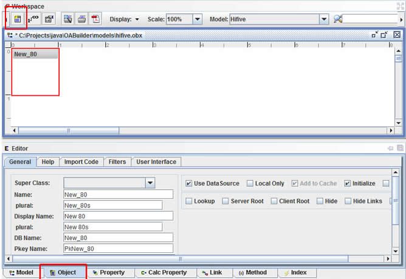

Creating a new Object
Adding a new object to a model is equivalent to creating a new table in a database.
To create a new Object for the Model, choose one of the following
- Select "Create OAObject" from the "Edit" menu.
- Select the new object icon from the toolbar
The new object will be added to the Model in the upper left corner of the workspace.
The Object Editor is then used to name and setup the new object.
